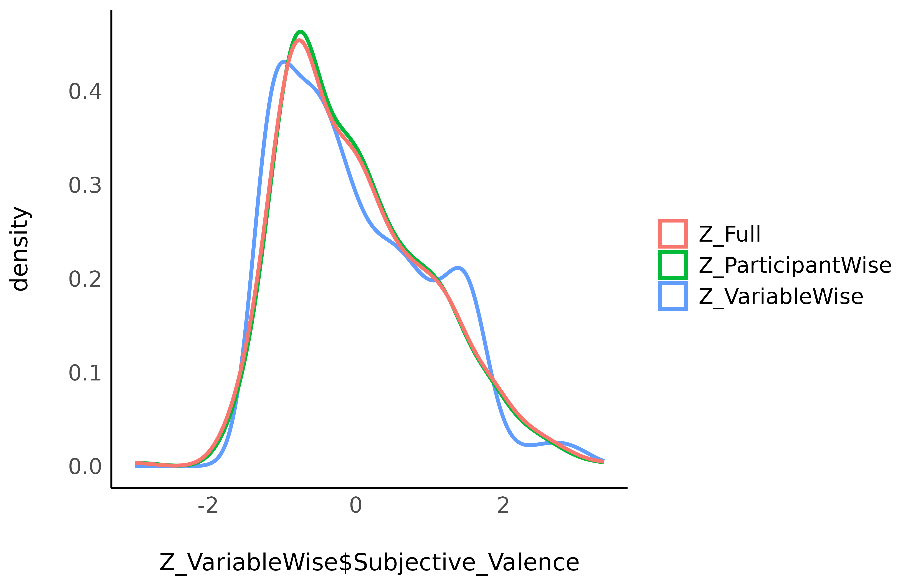

This vignette can be referred to by citing the following:
Patil et al., (2022). datawizard: An R Package for Easy Data Preparation and Statistical Transformations. Journal of Open Source Software, 7(78), 4684, https://doi.org/10.21105/joss.04684
Introduction
To make sense of their data and effects, scientists might want to standardize (Z-score) their variables. This makes the data unitless, expressed only in terms of deviation from an index of centrality (e.g., the mean or the median). However, aside from some benefits, standardization also comes with challenges and issues, that the scientist should be aware of.
Methods of Standardization
The datawizard package offers two methods of
standardization via the standardize() function:
Normal standardization: center around the mean, with SD units (default).
Robust standardization: center around the median, with MAD (median absolute deviation) units (
robust = TRUE).
Let’s look at the following example:
library(datawizard)
library(effectsize) # for data
# let's have a look at what the data look like
data("hardlyworking", package = "effectsize")
head(hardlyworking)#> salary xtra_hours n_comps age seniority is_senior
#> 1 19744.65 4.16 1 32 3 FALSE
#> 2 11301.95 1.62 0 34 3 FALSE
#> 3 20635.62 1.19 3 33 5 TRUE
#> 4 23047.16 7.19 1 35 3 FALSE
#> 5 27342.15 11.26 0 33 4 FALSE
#> 6 25656.63 3.63 2 30 5 TRUE
# let's use both methods of standardization
hardlyworking$xtra_hours_z <- standardize(hardlyworking$xtra_hours)
hardlyworking$xtra_hours_zr <- standardize(hardlyworking$xtra_hours, robust = TRUE)We can see that different methods give different central and variation values:
library(dplyr)
hardlyworking %>%
select(starts_with("xtra_hours")) %>%
data_to_long() %>%
group_by(Name) %>%
summarise(
mean = mean(Value),
sd = sd(Value),
median = median(Value),
mad = mad(Value)
)| name | mean | sd | median | mad |
|---|---|---|---|---|
| xtra_hours | 3.9756 | 3.9037 | 2.7700 | 2.8466 |
| xtra_hours_z | 0.0000 | 1.0000 | -0.3088 | 0.7292 |
| xtra_hours_zr | 0.4235 | 1.3714 | 0.0000 | 1.0000 |
standardize() can also be used to standardize a full
data frame - where each numeric variable is standardized separately:
hardlyworking_z <- standardize(hardlyworking)
hardlyworking_z %>%
select(-xtra_hours_z, -xtra_hours_zr) %>%
data_to_long() %>%
group_by(Name) %>%
summarise(
mean = mean(Value),
sd = sd(Value),
median = median(Value),
mad = mad(Value)
)| name | mean | sd | median | mad |
|---|---|---|---|---|
| age | 0.00 | 1.0000 | 0.0605 | 1.2461 |
| is_senior | 0.44 | 0.4969 | 0.0000 | 0.0000 |
| n_comps | 0.00 | 1.0000 | -0.0606 | 1.7968 |
| salary | 0.00 | 1.0000 | -0.1619 | 0.8640 |
| seniority | 0.00 | 1.0000 | -0.3681 | 1.2931 |
| xtra_hours | 0.00 | 1.0000 | -0.3088 | 0.7292 |
Weighted standardization is also supported via the
weights argument, and factors can also be standardized (if
you’re into that kind of thing) by setting force = TRUE,
which converts factors to treatment-coded dummy variables before
standardizing.
Variable-wise vs. Participant-wise
Standardization is an important step and extra caution is required in repeated-measures designs, in which there are three ways of standardizing data:
Variable-wise: The most common method. A simple scaling of each column.
Participant-wise: Variables are standardized “within” each participant, i.e., for each participant, by the participant’s mean and SD.
Full: Participant-wise first and then re-standardizing variable-wise.
Unfortunately, the method used is often not explicitly stated. This is an issue as these methods can generate important discrepancies (that can in turn contribute to the reproducibility crisis). Let’s investigate these 3 methods.
The Data
We will take the emotion dataset in which participants
were exposed to negative pictures and had to rate their emotions
(valence) and the amount of memories associated with
the picture (autobiographical link). One could make the
hypothesis that for young participants with no context of war or
violence, the most negative pictures (mutilations) are less related to
memories than less negative pictures (involving for example car crashes
or sick people). In other words, we expect a positive
relationship between valence (with high values corresponding to
less negativity) and autobiographical link.
Let’s have a look at the data, averaged by participants:
# Download the 'emotion' dataset
load(url("https://raw.githubusercontent.com/neuropsychology/psycho.R/master/data/emotion.rda"))
# Discard neutral pictures (keep only negative)
emotion <- emotion %>% filter(Emotion_Condition == "Negative")
# Summary
emotion %>%
drop_na(Subjective_Valence, Autobiographical_Link) %>%
group_by(Participant_ID) %>%
summarise(
n_Trials = n(),
Valence_Mean = mean(Subjective_Valence),
Valence_SD = sd(Subjective_Valence)
)#> # A tibble: 19 × 4
#> # Groups: Participant_ID [19]
#> Participant_ID n_Trials Valence_Mean Valence_SD
#> <fct> <int> <dbl> <dbl>
#> 1 10S 24 -58.1 42.6
#> 2 11S 24 -73.2 37.0
#> 3 12S 24 -57.5 26.6
#> 4 13S 24 -63.2 23.7
#> 5 14S 24 -56.6 26.5
#> 6 15S 24 -60.6 33.7
#> 7 16S 24 -46.1 24.9
#> 8 17S 24 -1.54 4.98
#> 9 18S 24 -67.2 35.0
#> 10 19S 24 -59.6 33.2
#> 11 1S 24 -53.0 42.9
#> 12 2S 23 -43.0 39.2
#> 13 3S 24 -64.3 34.4
#> 14 4S 24 -81.6 27.6
#> 15 5S 24 -58.1 25.3
#> 16 6S 24 -74.7 29.2
#> 17 7S 24 -62.3 39.7
#> 18 8S 24 -56.9 32.7
#> 19 9S 24 -31.5 52.7As we can see from the means and SDs, there is a lot of variability between participants both in their means and their individual within-participant SD.
Effect of Standardization
We will create three data frames standardized with each of the three techniques.
Z_VariableWise <- emotion %>%
standardize()
Z_ParticipantWise <- emotion %>%
group_by(Participant_ID) %>%
standardize()
Z_Full <- emotion %>%
group_by(Participant_ID) %>%
standardize() %>%
ungroup() %>%
standardize()Let’s see how these three standardization techniques affected the Valence variable.
Across Participants
We can calculate the mean and SD of Valence across all participants:
# Create a convenient function to print
summarise_Subjective_Valence <- function(data) {
df_name <- deparse(substitute(data))
data %>%
ungroup() %>%
summarise(
DF = df_name,
Mean = mean(Subjective_Valence),
SD = sd(Subjective_Valence)
)
}
# Check the results
rbind(
summarise_Subjective_Valence(Z_VariableWise),
summarise_Subjective_Valence(Z_ParticipantWise),
summarise_Subjective_Valence(Z_Full)
)| DF | Mean | SD |
|---|---|---|
| Z_VariableWise | 0 | 1.00 |
| Z_ParticipantWise | 0 | 0.98 |
| Z_Full | 0 | 1.00 |
The means and the SD appear as fairly similar (0 and 1)…
library(see)
library(ggplot2)
ggplot() +
geom_density(aes(Z_VariableWise$Subjective_Valence,
color = "Z_VariableWise"
), linewidth = 1) +
geom_density(aes(Z_ParticipantWise$Subjective_Valence,
color = "Z_ParticipantWise"
), linewidth = 1) +
geom_density(aes(Z_Full$Subjective_Valence,
color = "Z_Full"
), linewidth = 1) +
see::theme_modern() +
labs(color = "")
and so do the marginal distributions…
At the Participant Level
However, we can also look at what happens in the participant level. Let’s look at the first 5 participants:
# Create convenient function
print_participants <- function(data) {
df_name <- deparse(substitute(data))
data %>%
group_by(Participant_ID) %>%
summarise(
DF = df_name,
Mean = mean(Subjective_Valence),
SD = sd(Subjective_Valence)
) %>%
head(5) %>%
select(DF, everything())
}
# Check the results
rbind(
print_participants(Z_VariableWise),
print_participants(Z_ParticipantWise),
print_participants(Z_Full)
)| DF | Participant_ID | Mean | SD |
|---|---|---|---|
| Z_VariableWise | 10S | -0.05 | 1.15 |
| Z_VariableWise | 11S | -0.46 | 1.00 |
| Z_VariableWise | 12S | -0.03 | 0.72 |
| Z_VariableWise | 13S | -0.19 | 0.64 |
| Z_VariableWise | 14S | -0.01 | 0.71 |
| Z_ParticipantWise | 10S | 0.00 | 1.00 |
| Z_ParticipantWise | 11S | 0.00 | 1.00 |
| Z_ParticipantWise | 12S | 0.00 | 1.00 |
| Z_ParticipantWise | 13S | 0.00 | 1.00 |
| Z_ParticipantWise | 14S | 0.00 | 1.00 |
| Z_Full | 10S | 0.00 | 1.02 |
| Z_Full | 11S | 0.00 | 1.02 |
| Z_Full | 12S | 0.00 | 1.02 |
| Z_Full | 13S | 0.00 | 1.02 |
| Z_Full | 14S | 0.00 | 1.02 |
Seems like full and participant-wise standardization give similar results, but different ones than variable-wise standardization.
Compare
Let’s do a correlation between the variable-wise and participant-wise methods.
r <- cor.test(
Z_VariableWise$Subjective_Valence,
Z_ParticipantWise$Subjective_Valence
)
data.frame(
Original = emotion$Subjective_Valence,
VariableWise = Z_VariableWise$Subjective_Valence,
ParticipantWise = Z_ParticipantWise$Subjective_Valence
) %>%
ggplot(aes(x = VariableWise, y = ParticipantWise, colour = Original)) +
geom_point(alpha = 0.75, shape = 16) +
geom_smooth(method = "lm", color = "black") +
scale_color_distiller(palette = 1) +
ggtitle(paste0("r = ", round(r$estimate, 2))) +
see::theme_modern()
While the three standardization methods roughly present the same characteristics at a general level (mean 0 and SD 1) and a similar distribution, their values are not exactly the same!
Let’s now answer the original question by investigating the linear relationship between valence and autobiographical link. We can do this by running a mixed-effects model with participants entered as random effects.
library(lme4)
m_raw <- lmer(
formula = Subjective_Valence ~ Autobiographical_Link + (1 | Participant_ID),
data = emotion
)
m_VariableWise <- update(m_raw, data = Z_VariableWise)
m_ParticipantWise <- update(m_raw, data = Z_ParticipantWise)
m_Full <- update(m_raw, data = Z_Full)We can extract the parameters of interest from each model, and find:
# Convenient function
get_par <- function(model) {
mod_name <- deparse(substitute(model))
parameters::model_parameters(model) %>%
mutate(Model = mod_name) %>%
select(-Parameter) %>%
select(Model, everything()) %>%
.[-1, ]
}
# Run the model on all datasets
rbind(
get_par(m_raw),
get_par(m_VariableWise),
get_par(m_ParticipantWise),
get_par(m_Full)
)#> # Fixed Effects
#>
#> Model | Coefficient | SE | 95% CI | t(451) | p
#> -----------------------------------------------------------------------
#> m_raw | 0.09 | 0.07 | [-0.04, 0.22] | 1.36 | 0.174
#> m_VariableWise | 0.07 | 0.05 | [-0.03, 0.17] | 1.36 | 0.174
#> m_ParticipantWise | 0.08 | 0.05 | [-0.01, 0.17] | 1.75 | 0.080
#> m_Full | 0.08 | 0.05 | [-0.01, 0.17] | 1.75 | 0.080
#>
#> # Random Effects: Participant_ID
#>
#> Model | Coefficient
#> -------------------------------
#> m_raw | 16.49
#> m_VariableWise | 0.45
#> m_ParticipantWise | 0.00
#> m_Full | 0.00
#>
#> # Random Effects: Residual
#>
#> Model | Coefficient
#> -------------------------------
#> m_raw | 33.56
#> m_VariableWise | 0.91
#> m_ParticipantWise | 0.98
#> m_Full | 1.00As we can see, variable-wise standardization only affects the coefficient (which is expected, as it changes the unit), but not the test statistic or statistical significance. However, using participant-wise standardization does affect the coefficient and the significance.
No method is better or more justified, and the choice depends on the specific case, context, data and goal.
Conclusion
Standardization can be useful in some cases and should be justified.
Variable and Participant-wise standardization methods appear to produce similar data.
Variable and Participant-wise standardization can lead to different results.
The chosen method can strongly influence the results and should therefore be explicitly stated and justified to enhance reproducibility of results.
We showed here yet another way of sneakily tweaking the data that can change the results. To prevent its use as a bad practice, we can only highlight the importance of open data, open analysis/scripts, and preregistration.
See also
-
datawizard::demean(): https://easystats.github.io/datawizard/reference/demean.html -
standardize_parameters(method = "pseudo")for mixed-effects models https://easystats.github.io/parameters/articles/standardize_parameters_effsize.html